Lab 5: Interrupts
Introduction
The goal of this lab is to apply our learning about interrupts to detect quadrature encoder pulses and display it as motor velocity, by using our MCU, hall effect sensors, and interrupt code.
Quadrature Encoder
Quadrature encoders are used to measure the angles of motors, by using two sensors that are 90 degrees apart. For our lab, we are using the 25GA370 Motor, which uses hall effect sensors and magnets to be able to detect this. To determine the speed of the motor, we can make some calculations. On the datasheet for the motor, it says that there are 408 motor Pulses Per Rotation/Revolution (PRR). We want to display the motor speed in units of revolutions per second, so we can do that by finding the pulses per second that we measure from the quadrature encoders, and divide that by the PRR. Since the sensors of the motor are 90 degrees apart, we can measure the time difference between the readings of the two sensors, and multiply that by 4 to get a full pulse. To determine how long that pulse took, we can multiply by our sampling frequency and divide that by our time difference between our two motors. The image below shows the math in more detail:
MCU Design
Objective
The objective of this lab is to be able to apply our knowledge of interrupts to be able to calculate the speed of a motor, which is equipped with quadrature encoders.
Interrupt Design
For the interrupts, I designed my code so that an interrupt would be triggered on a rising or falling edge of either ASIGNAL_PIN or BSIGNAL_PIN. Once the interrupt was triggered, the interrupt handler would determine which signal triggered the interrupt, and whether the value of both signals is the same. If they are the same, it would save the time difference between the two signals into deltaT. Then, it would reset the timer, and return from the interrupt. This can be seen in my interrupt design flowchart below:
Interrupt Design Flowchart
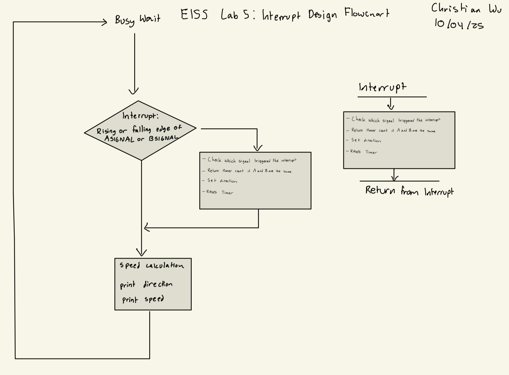
Interrupts vs Polling
For this lab, our code checks for changes in our inputs ASIGNAL_PIN and BSIGNAL_PIN very often and quickly. With code that uses polling, checking signals and processing, along with the calculations for speed are all done within the main function in the while loop, and this could lead to inaccurate or delayed outputs. This is due to the fact that we might be checking for inputs faster than our MCU can do all the processing and calculations, causing our speed outputs to not reflect the current inputs. As a result, we can use interrupts, which stop the main loop from continuously checking for new inputs until all our processing and calculations are done, ensuring that our output results are accurate and reflect the signal inputs into the MCU with no delay. The math below shows how polling will miss many clock edges if used for this lab:
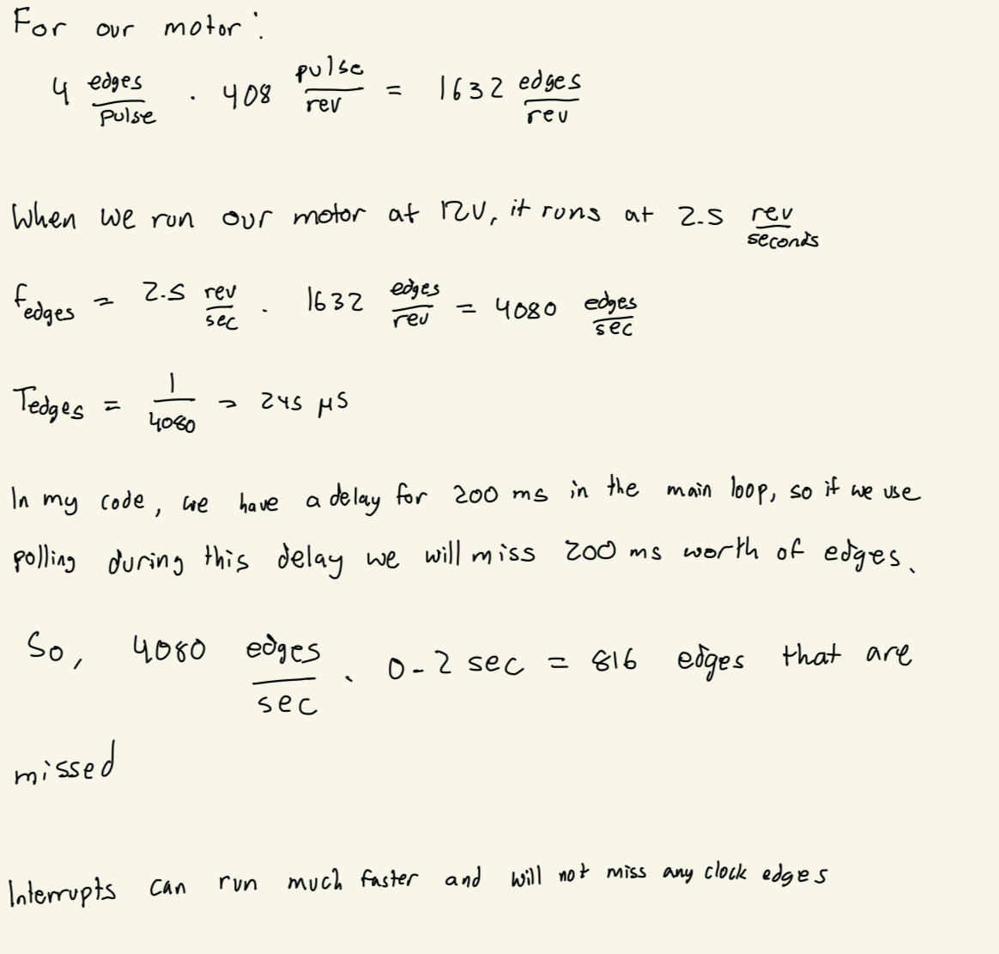
Code Design
To design with software for this lab, I utilized two different timers. I used TIM2 as my delay timer, and used TIM6 as my counter timer. For both of these timers, I used MSI as my system clock as it is the default clock running at 4 MHz. For both TIM2 and TIM6, I scaled down the timers to a slower frequency to be able to run how I wanted it.
Headers and C Files for Supporting Files
For this lab, we were now able to utilize the CMSIS headers, meaning that we do not have to make our own header files. For FLASH, GPIO, RCC, and USART header and c files, I took them directly from the E155 Interrupt Tutorial Repository. For the TIM file, I also took the header file from the Interrupt Tutorial Repository, but slightly modified STM32L432KC_TIM.c when initiliazing each of my timers, as I wanted them to run at different frequencies. I wanted to run my delay timer at 1 kHz for simplicity, and run my counter timer at 1 MHz due to the need to check for signals on the motor much faster and capture every edge for the highest resolution output. Thus, the code for the STM32L432KC_TIM.c file is below:
TIM C File
// Christian Wu
// chrwu@g.hmc.edu
// 09/30/25
// Taken from the E155 Course Website and Modified
// STM32F401RE_TIM.c
// TIM functions
#include "STM32L432KC_TIM.h"
#include "STM32L432KC_RCC.h"
void initDelayTIM(TIM_TypeDef * TIMx){
// Set prescaler to give 1 ms time base
uint32_t psc_div = (uint32_t) ((SystemCoreClock/1e3));
// Set prescaler division factor
TIMx->PSC = (psc_div - 1);
// Generate an update event to update prescaler value
TIMx->EGR |= 1;
// Enable counter
TIMx->CR1 |= 1; // Set CEN = 1
}
void initCounterTIM(TIM_TypeDef * TIMx){
// Set prescaler to give 1 ms time base
uint32_t psc_div = (uint32_t) ((SystemCoreClock/1e6));
// Set prescaler division factor
TIMx->PSC = (psc_div - 1);
// Generate an update event to update prescaler value
TIMx->EGR |= 1;
// Enable counter
TIMx->CR1 |= 1; // Set CEN = 1
}
void delay_millis(TIM_TypeDef * TIMx, uint32_t ms){
TIMx->ARR = ms;// Set timer max count
TIMx->EGR |= 1; // Force update
TIMx->SR &= ~(0x1); // Clear UIF
TIMx->CNT = 0; // Reset count
while(!(TIMx->SR & 1)); // Wait for UIF to go high
}Main Code File
To tie everything together and actually run my code on the MCU, I had a main.h header file, and main.c file. I configured my timers, GPIO, and interrupts, and wrote my interrupt handling, and my speed calculations and printing. My code is as shows below:
main.h code
// Christian Wu
// chrwu@g.hmc.edu
// 10/01/25
// Header file for main.c
#ifndef MAIN_H
#define MAIN_H
#include "lib/STM32L432KC.h"
#include <stm32l432xx.h>
#include "lib/STM32L432KC_FLASH.h"
#include "lib/STM32L432KC_GPIO.h"
#include "lib/STM32L432KC_RCC.h"
#include "lib/STM32L432KC_TIM.h"
#define ASIGNAL_PIN PA9
#define BSIGNAL_PIN PA6
#define DELAY_TIM TIM2
#define COUNTER_TIM TIM6
#endifmain.c code
// Christian Wu
// chrwu@g.hmc.edu
// 09/30/25
#include "../lib/main.h"
int direction;
int deltaT;
float speed;
// Function used by printf to send characters to the laptop - Taken from E155 Website
int _write(int file, char *ptr, int len) {
int i = 0;
for (i = 0; i < len; i++) {
ITM_SendChar((*ptr++));
}
return len;
}
int main(void) {
// Enable A Signal Pin
gpioEnable(GPIO_PORT_A);
pinMode(ASIGNAL_PIN, GPIO_INPUT);
GPIOA->PUPDR |= _VAL2FLD(GPIO_PUPDR_PUPD9, 0b01); // Set PA9 as pull-up
// Enable B Signal Pin
pinMode(BSIGNAL_PIN, GPIO_INPUT);
GPIOA->PUPDR |= _VAL2FLD(GPIO_PUPDR_PUPD6, 0b01); // Set PA6 as pull-up
// Initialize timer
RCC->APB1ENR1 |= RCC_APB1ENR1_TIM2EN;
initDelayTIM(DELAY_TIM);
RCC->APB1ENR1 |= RCC_APB1ENR1_TIM6EN;
initCounterTIM(COUNTER_TIM);
// TODO
// 1. Enable SYSCFG clock domain in RCC
RCC->APB2ENR |= RCC_APB2ENR_SYSCFGEN;
// 2. Configure EXTICR for the input button interrupt
SYSCFG->EXTICR[2] |= _VAL2FLD(SYSCFG_EXTICR3_EXTI9, 0b000);
SYSCFG->EXTICR[1] |= _VAL2FLD(SYSCFG_EXTICR2_EXTI6, 0b000);
// Enable interrupts globally
__enable_irq();
// TODO: Configure interrupt for falling edge of GPIO pin for button
// 1. Configure mask bit
EXTI->IMR1 |= (1 <<gpioPinOffset(ASIGNAL_PIN));
EXTI->IMR1 |= (1 <<gpioPinOffset(BSIGNAL_PIN));
// 2. Enable rising edge trigger
EXTI->RTSR1 |= (1 << gpioPinOffset(ASIGNAL_PIN));
EXTI->RTSR1 |= (1 << gpioPinOffset(BSIGNAL_PIN));
// 3. Enable falling edge trigger
EXTI->FTSR1 |= (1 << gpioPinOffset(ASIGNAL_PIN));
EXTI->FTSR1 |= (1 << gpioPinOffset(BSIGNAL_PIN));
// 4. Turn on EXTI interrupt in NVIC_ISER
NVIC->ISER[0] |= (1 << EXTI9_5_IRQn);
while(1){
if (direction) {
printf("Direction: Clockwise \n");
}
else {
printf("Direction: Counter Clockwise \n");
}
speed = 1000000.0 / (408.0*4.0*deltaT);
printf("Speed: %f revolutions/second \n", speed);
delay_millis(DELAY_TIM, 200);
}
}
// TODO: What is the right name for the IRQHandler?
void EXTI9_5_IRQHandler(void){
int a_reading = digitalRead(ASIGNAL_PIN);
int b_reading = digitalRead(BSIGNAL_PIN);
// Check that ASIGNAL_PIN was what triggered our interrupt
if (EXTI->PR1 & (1 << 9)){
// If so, clear the interrupt (NB: Write 1 to reset.)
EXTI->PR1 |= (1 << 9);
// If ASIGNAL_PIN and BSIGNAL_PIN are the same, return the difference between the two signals
if((a_reading && b_reading) || (!a_reading && !b_reading)) {
deltaT = COUNTER_TIM->CNT;
direction = 0;
}
COUNTER_TIM->CNT = 0;
}
// Check that BSIGNAL_PIN was what triggered our interrupt
if (EXTI->PR1 & (1 << 6)){
// If so, clear the interrupt (NB: Write 1 to reset.)
EXTI->PR1 |= (1 << 6);
// If ASIGNAL_PIN and BSIGNAL_PIN are the same, return the difference between the two signals
if((a_reading && b_reading) || (!a_reading && !b_reading)) {
deltaT = COUNTER_TIM->CNT;
direction = 1;
}
COUNTER_TIM->CNT = 0;
}
}Hardware
Design and Schematic
I can now build my hardware and program my MCU. I am using PA6, and PA9 for my two quadrature encoder signals, onboard 5V and ground to power the quadrature encoder, and an external power supply varying from 0 to 12 V to power the motor.
Below, is my schematic:
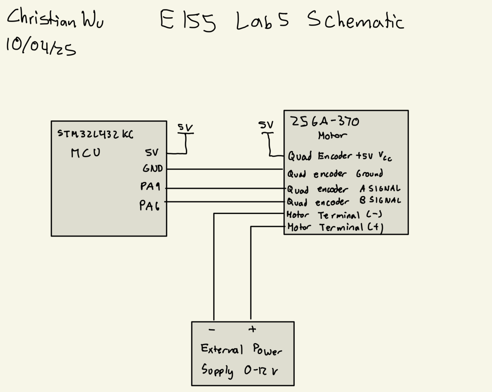
Results
After creating my Segger project and uploading the code to my MCU, I was successfully able to display the direction and speed of the motor. I was able to confirm this by using an oscilloscope to verify that my speed output was correct. To do this, I hooked up both my ASIGNAL_PIN and BSIGNAL_PIN to the oscilloscope and found the time difference between the two signals. I used a spreadsheet to convert that time difference into speed by doing the following formula: speed = 1000000 / (deltaT * 4 * PPR), where speed is in revolutions per second, deltaT is in s, and PPR was 408 pulses per revolution.
Supplying 1.18 V to the motor, the oscilloscope showed a deltaT of 2250, which is a speed of 0.272, and my code said it was 0.262, which is a 3.7% error.
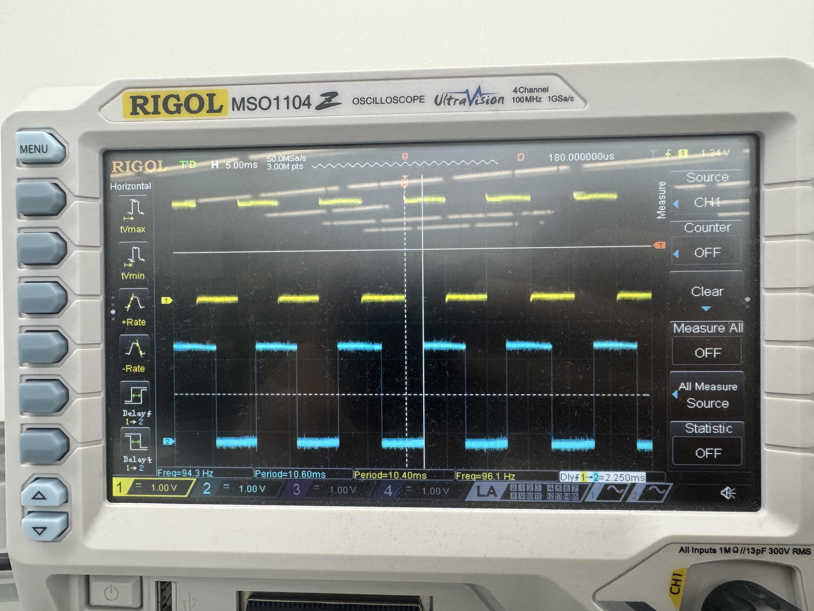
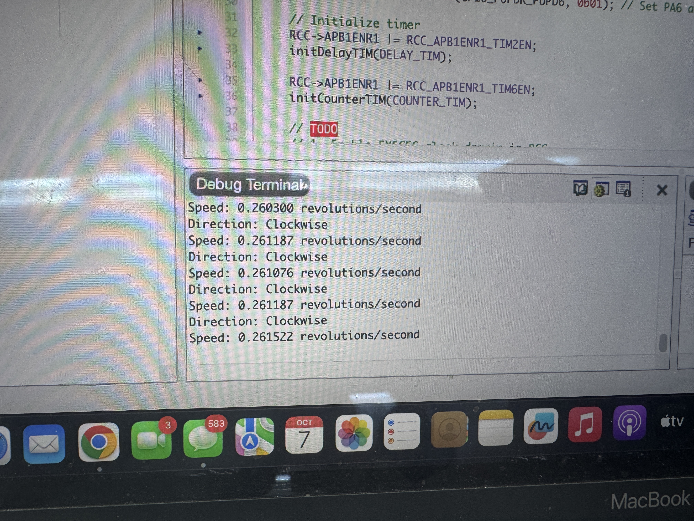
Supplying 4.34 V to the motor, the oscilloscope showed a deltaT of 580, which is a speed of 1.056, and my code said it was 1.060, which is a 0.379% error.
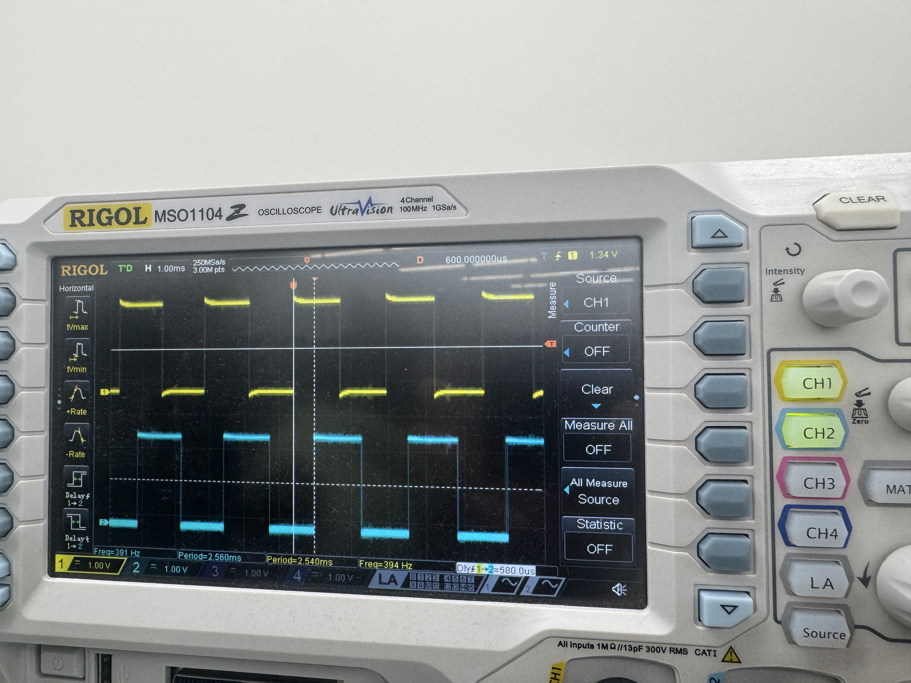

As a result, my design and project has met all the requirements for this lab.
Supplying 8 V to the motor, the oscilloscope showed a deltaT of 310, which is a speed of 1.977, and my code said it was 2.0, which is a 1.16% error.
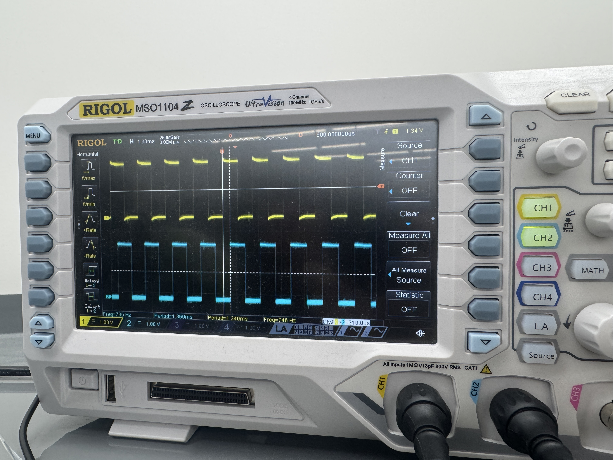
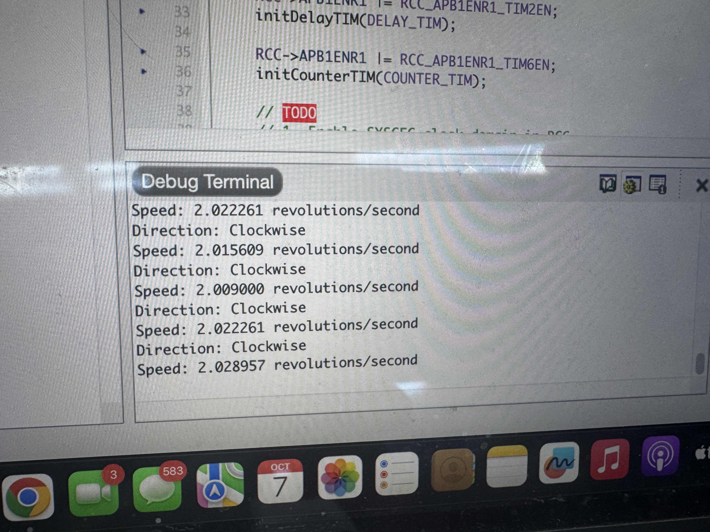
Supplying 12.12 V to the motor, the oscilloscope showed a deltaT of 205, which is a speed of 2.98, and my code said it was 3.08, which is a 3.36% error.
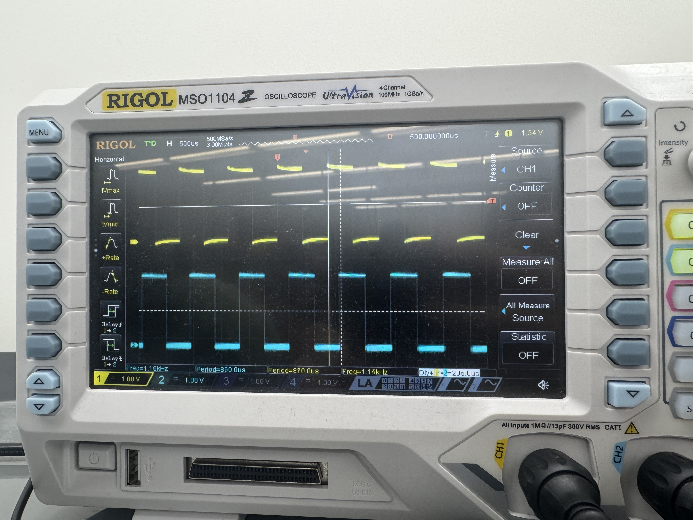
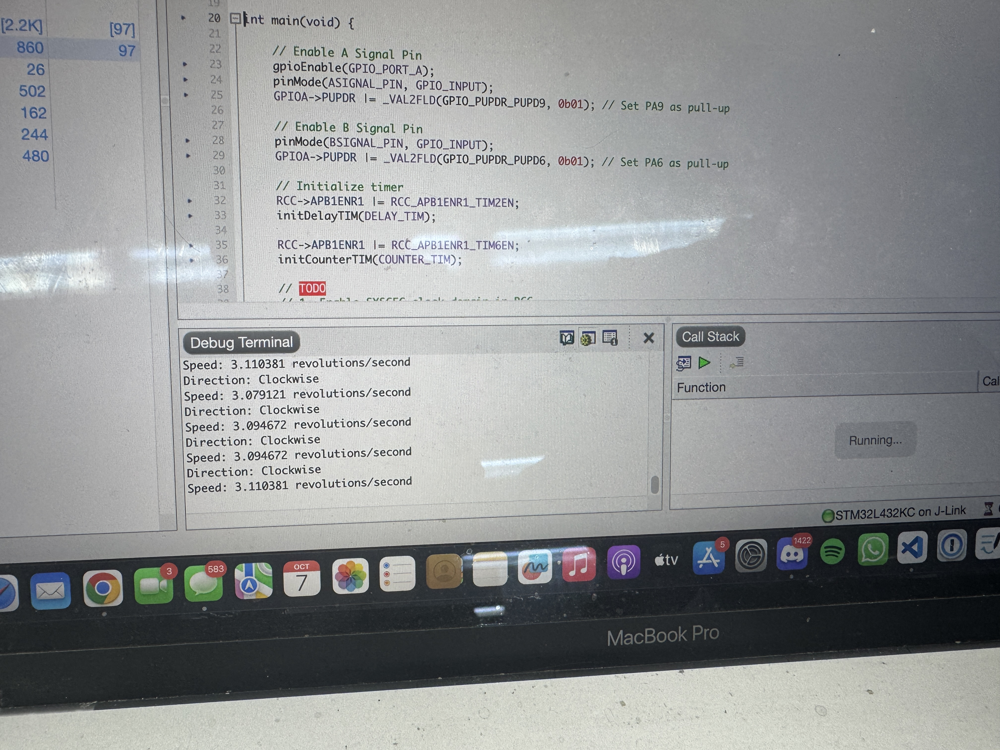
At 0 V to the motor, my MCU correctly displayed 0 revs/sec
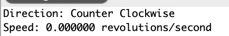
As a result, my design and project has met all the requirements for this lab.
AI Prototype
Prompt
To test how AI would do for this lab, I entered the following prompt to ChatGPT:
Write me interrupt handlers to interface with a quadrature encoder. I’m using the STM32L432KC, what pins should I connect the encoder to in order to allow it to easily trigger the interrupts?AI Response
As a result, it returned the following response:
Great choice of MCU—this is straightforward on the L432KC.
Which pins to use
You have two good patterns depending on whether you’ll decode in software (GPIO EXTI interrupts) or offload it to a timer (hardware encoder mode). Both are easy on the NUCLEO-L432KC pinout.
A) Software decode via GPIO EXTI (both edges)
Pick any pair that maps to distinct EXTI lines. These work well and are also on Arduino headers:
PA0 → Channel A (EXTI0)
PA1 → Channel B (EXTI1)
Alternatives (equally good):
PA6 (EXTI6) / PA7 (EXTI7)
PB6 (EXTI6) / PB7 (EXTI7)
(Optional index Z): PC13 (EXTI13) is perfect for the index pulse.
Why these? They give you clean EXTI lines and, if you later switch to timer encoder mode, the same pins map neatly to timer channels (see below).
B) Hardware decode with a timer in Encoder Interface mode (recommended)
Use a general-purpose timer with CH1/CH2 on adjacent pins:
TIM2: PA0 = TIM2_CH1, PA1 = TIM2_CH2 (AF1)
TIM3: PA6 = TIM3_CH1, PA7 = TIM3_CH2 (AF2)
TIM4: PB6 = TIM4_CH1, PB7 = TIM4_CH2 (AF2)
This lets the timer do the A/B decoding in hardware. You can still enable a periodic/overflow interrupt or poll TIMx->CNT.Reflection
For this prompt, AI did quite well in telling me what pins to use and why, so the hardware advice was spot on. However, it also gave me code to use, which used hardware abstraction layers (HAL). However, our approach for this lab was using CMSIS headers. I had never seen HAL before, so I also gave chatGPT my code for this lab and told it to compare between the two approaches to this lab. With this, it was able to give me good insight on the pros and cons of using each approach and how to navigate it. I think this is a strong suit of AI, as the MCU has so many tools and abilities that we have not learned about. AI is able to break down these difficult concepts in easy to digest ways with various examples. This will be really useful for the project as we work through understanding new features and how to go about it, especially with troubleshooting and setup.
Hours Spent
I spent 15 hours on this lab.